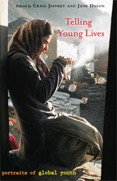

<body bgcolor="#FFFFFF" text="#000000" link="#0000FF" vlink="#CC0000" alink="#CC0000"><center><hr width="350" size="1" align="center" noshade>Examines the changing political and social strategies of contemporary young people around the globe<hr width="350" size="1" align="center" noshade><p><a href="https://cdcshoppingcart.uchicago.edu/Cart/ChicagoBook.aspx?ISBN=9781592139309&&PRESS=temple" target="_top">Buy this book!</a> | <a href="https://cdcshoppingcart.uchicago.edu/Cart/Cart.aspx?PRESS=temple" target="_top">View Cart</a> | <a href="https://cdcshoppingcart.uchicago.edu/Cart/Cart.aspx?PRESS=temple" target="_top">Check Out</a></p><p></p></center><!--none//--><h1>Telling Young Lives</h1>
<H2>Portraits of Global Youth</H2>
<h3>edited by Craig Jeffrey and Jane Dyson</h3>
<P>cloth 1-59213-930-2 $75.50, Sep 08, <FONT COLOR=#990033>Available</FONT>
<br>paper 1-59213-931-0 $28.95, Sep 08, <FONT COLOR=#990033>Available</FONT>
<br>Electronic Book 1-59213-932-9 $28.95 <FONT COLOR=#990033>Available</FONT>
<BR> 232 pp
6x9
1&nbsp;map(s) 1&nbsp;figure 14&nbsp;halftones
</P><BLOCKQUOTE><I>"</i>Telling Young Lives<i> provides us with thirteen in depth portraits of young people around the globe, as they navigate their way through homelessness, precarious labor, ethnic conflict, religious persecutions and simple everyday challenges of growing up. Told in rich, often lyrical detail, and through the voices of these young people themselves, each narrative is supplemented with suggested additional scholarly readings. </i>Telling Young Lives<i> provides the reader with a compelling introduction into the politics of everyday life as shaped and experienced by contemporary young people. A great read."</I>
<BR>&#151<B>Sue Ruddick</B>, Associate Professor of Geography, University of Toronto<i></I></BLOCKQUOTE>
<P><I>Telling Young Lives</I> presents more than a dozen fascinating, ethnographically informed portraits of young people facing rapid changes in society and politics from different parts of the world. From a young woman engaged in agricultural labor in the High Himalayas to a youth activist based in Tanzania, the distinctive voices from the U.K., India, Germany, Sierra Leone, South Africa and Bosnia Herzegovina, provide insights into the active and creative ways these youths are addressing social and political challenges such as war, hunger and homelessness.</P>
<P><I>Telling Young Lives</I> has great appeal for classroom use in geography courses and makes a welcome contribution to the growing field of �young geographies,� as well as to politics and political geography. Its focus on individual portraits gives readers a fuller, more vivid picture of the ways in which global changes are reshaping the actual experiences and strategies of young people around the world.</P>
<BR>&nbsp;<h2>Excerpt</h2><P>Excerpt available at <a href="http://www.temple.edu/tempress">www.temple.edu/tempress</a></p>
<BR>&nbsp;<h2>Reviews</h2>
<p><i>"A well-conceived and timely volume that will be useful for classroom teaching in political geography, social geography, and allied disciplines. It also breaks new ground in political geography and geographies of youth that will make it a standard reference for the growing number of scholars working on these issues."</i>
<br>&#151<b>Carl Dahlman</b>, Associate Professor, Department of Geography, Miami University of Ohio
<p><i>�Each chapter provides insight not only into the life being examined but also the youth�s political and social milieu�. The range of subjects and the accessibility of the writing make this a valuable complement to more theoretical texts and undeniably useful in the classroom.�</i> <br>&#151;<b><i>Publishers Weekly</i></b>
<p><i>"In a refreshing break from typical edited volumes, Jeffrey and Dyson have compiled 13 richly contextualized life histories of young people...[I]t will make a fantastic addition to library collections in world regional geography. Highly recommended."
</i><br>&#151;<b><i>Choice</i></b>
<p><i>"The authors and editors have a clear view of what the reader is to take from this book...these are young people who are struggling to survive and prosper in a world where they get little or no support because of 'neo-liberal' policies.... Their secret is that they are determined to succeed no matter what the difficulties and for this these young lives will make the reader root for them and be grateful for what they themselves have." </i> <br>&#151;<b><i>Children & Society</i></b>
<p><i>"This volume provides a nuanced introduction to the lives of youth around the world through vignettes that illustrate youth negotiating the difficulties of life in their respective societies with awareness and consciously developed tactics.... This book does a good job of exhibiting different personalities of the youth, which also impact how they react to their various circumstances." </i> <br>&#151;<b><i>Economic & Political Weekly</i></b>
<p><i>"This book aims to break the mould�and it does.... The portraits are the strength of the book. They provide an excellent resource for teaching about a variety of topics, including gloablisation (sic), social change, and citizenship and youth studies."</i> <br>&#151;<b><i>Anthropological Notebooks</i></b>
<p><i>"The book delivers fascinating insights into the lives of 13 young people living in different parts of the world.... [T]he essayistic, TV-documentary-like style has a strong impressionistic appeal. It gives insight to life spheres that are most important in social research, but not easily accessible."</i><br>&#151;<b><i>Young: Nordic Journal of Youth Research</i></b>
<p><i>"</i>Telling Young Lives<i> provides clever, original and unpretentious insights on global youth.... The book is readable for very different audiences as it aims to go beyond the academy walls and pervade public debates. The topic, the methodology, and the language of the book make it also appropriate for engaging students in sociology, anthropology, and other social sciences all over the world."</i><br>&#151;<b><i>Children, Youth and Environments</i></b>
<p><i>"[T]he book affords an intimate glimpse into how young people are making sense of their lives (past, present and future) as well as the world around them.... Rendered with sensitivity and detail, the book succeeds in providing a readable and engaging set of portraits of young people living in the global north and the global south." </i> <br>&#151;<b><i>Area</i></b>
<p><i>�The portraits contained in this volume are undoubtedly very powerful and contain an energy that is rarely found in academic writing�. The style and the subject matter mean that it is indeed more accessible to non-academic audiences than the average youth geographies publication....�</i> <br>&#151;<b><i>Progress in Human Geography</i></b>
<BR>&nbsp;<h2>Contents</h2><P>
<br>Foreword
<br>Acknowledgements
<br>1. Introduction
<br>2. Saka: Growing Up in the Indian Himalayas
<br>3. "All My Life, I've Bounced Around": A Portrait of Blacc
<br>4. Vusi Majola: "Walking Until the Shoes Is Finsihed"
<br>5. Young, White, Male, and Working Class: A Portrait of Richard
<br>6. Young, Male, Scottish, and Muslim: A Portrait of Kabir
<br>7. Politics, Lifestyle, and Identity: The Story of Sven, Eastern Germany
<br>8. "Each and Every Single Story About Me�There's Like a Huge Twist to It": Growing Up at Risk in the United States &#8212A A Portrait of Mike
<br>9. Zilho's Journeys: Displacement and Return in Bosnia-Herzegovina
<br>10. Rocks: A Portrait of Mohammed
<br>11. From Footballs to Fixer: Suresh and the New Politicians in North India
<br>12. Telling Nala's Story: Negotiating the Global Agendas and Local Politics of Maasai Development in Tanzania
<br>13. Darkest Whiteness: Race, Class, and Culture in Global Times: A Portrait of Helena
<br>14. Young, Deaf, and Lesbian: A Portrait of Susannah
<br>15. Afterword: Global Portraits and Local Snapshots
<br>About the Contributors
<br>Index
</P><BR>&nbsp;<H2>About the Author(s)</H2>
<table><tr><td valign="top"><img src="/tempress/authors/1927_au1.gif" height="90" width="75"></td><td width="100%" valign="middle"><p><B>Craig Jeffrey</B> is Associate Professor in Geography and International Studies, University of Washington. He is the co-author (with Patricia Jeffery and Roger Jeffery) of <I>Degrees Without Freedom? Education, Masculinities and Unemployment in North India</I>.</P></td></tr></table><table><tr><td valign="top"><img src="/tempress/authors/1927_au2.gif" height="90" width="75"></td><td width="100%" valign="middle"><p><B>Jane Dyson</B> is Affiliate Assistant Professor at the Jackson School of International Studies, University of Washington.</P></td></tr></table>
<BR><H2>Subject Categories</H2>
<p><A HREF="/tempress/geography.html" TARGET="_top">Geography</a>
<BR><A HREF="/tempress/anthropology.html" TARGET="_top">Anthropology</a>
<BR><A HREF="/tempress/sociology.html" TARGET="_top">Sociology</a>
</p>
<p align="center"><a href="https://cdcshoppingcart.uchicago.edu/Cart/ChicagoBook.aspx?ISBN=9781592139309&&PRESS=temple" target="_top">Buy this book!</a> | <a href="https://cdcshoppingcart.uchicago.edu/Cart/Cart.aspx?PRESS=temple" target="_top">View Cart</a> | <a href="https://cdcshoppingcart.uchicago.edu/Cart/Cart.aspx?PRESS=temple" target="_top">Check Out</a></p><p><font face="Arial" size="1"><a href="copyright.html" onMouseOver="window.status='Web Copyright Policy';return true;" onMouseOut="window.status=''" title="Web Copyright Policy">&copy;</a> 2015 <a href="http://www.temple.edu" target="new" onMouseOver="window.status='Link to Temple University home page';return true;" onMouseOut="window.status=''" title="Link to Temple University home page">Temple University</a>. All Rights Reserved. http://www.temple.edu/tempress/titles/1927_reg.html</font></p>